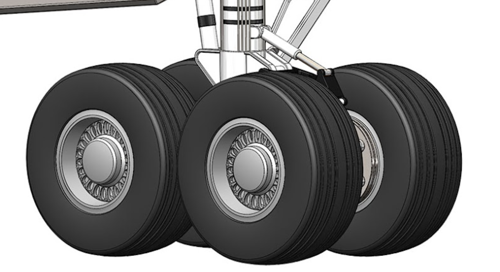

The drivetrain was designed for reliability and adaptability, using a modular structure and a sprocket-chain system with a locked differential. Testing involved Solidworks based FEA simulations under various conditions to ensure durability. Fabrication combined off-the-shelf and custom-machined parts for optimal performance. All technical documentation and aquainted models can be found below.
This project focuses on designing an aerodynamically optimized electric vehicle (EV) body using Siemens Star-CCM+. Computational Fluid Dynamics (CFD) simulations analyze airflow, pressure distribution, and drag forces to enhance efficiency. Parametric studies and shape optimization refine the design, leveraging advanced turbulence modeling (RANS, LES, DES) for accuracy. The goal is to minimize aerodynamic losses, improve energy efficiency, and extend the EV's range through high-fidelity simulations and iterative optimization.

This Landing Gear Analysis Tool calculates wheel loads, hydraulic actuator forces, shock absorber energy dissipation, and tire pressure for an aircraft's landing gear. It uses Monte Carlo simulations to predict failure probabilities and determines the optimal maintenance interval based on flight cycles. The tool enhances safety and efficiency by providing data-driven maintenance scheduling and failure risk visualization.
.
This CFD study analyzes airflow around two buildings using ANSYS Fluent to assess pedestrian comfort and structural feasibility. Simulating a scaled-down model with 10 m/s wind speed, 20°C temperature, and 1 atm pressure, it evaluates velocity, pressure, and vorticity. Results reveal high-velocity wind tunnels, dead zones causing debris accumulation, and pressure differences affecting door operation. Findings highlight the importance of CFD in urban planning to optimize building design, mitigate wind hazards, and enhance pedestrian experience.
This project develops a fully autonomous solar panel system that continuously tracks the highest light intensity. Designed in SolidWorks with DFA and DFM principles, it minimizes cost while meeting a $200 budget. The system integrates C++ and Arduino-controlled circuits, prototyped via breadboarding, to drive mechanical movement. Engineered to float on water, it achieved double the expected efficiency, increasing from 5% to 10%, enhancing solar energy capture.
The Clinostat Capstone Project focuses on developing a single-axis clinostat designed to simulate hypergravity conditions for space-related manufacturing research. The system, built to house a 1ft³ 3D printer, achieves rotational speeds of up to 120 RPM, enabling simulations of microgravity and hypergravity environments. The project integrates environmental sensors, vibration control mechanisms, and a high-resolution camera to ensure accurate data collection and process monitoring. The clinostat aims to provide an affordable and compact alternative to large-scale hypergravity simulators, supporting additive manufacturing, bioprinting, and material sciences research in space exploration.
JS Autolab is a personal endeavor dedicated to providing high-quality automotive audio solutions and detailing services. Specializing in subwoofer installations, the venture enhances in-car audio experiences through precise tuning and seamless integration. Additionally, JS Autolab offers professional vehicle detailing, ensuring both interior and exterior aesthetics are meticulously maintained. With a focus on craftsmanship and customer satisfaction, the venture combines technical expertise with a passion for automotive customization.